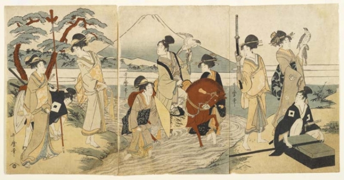
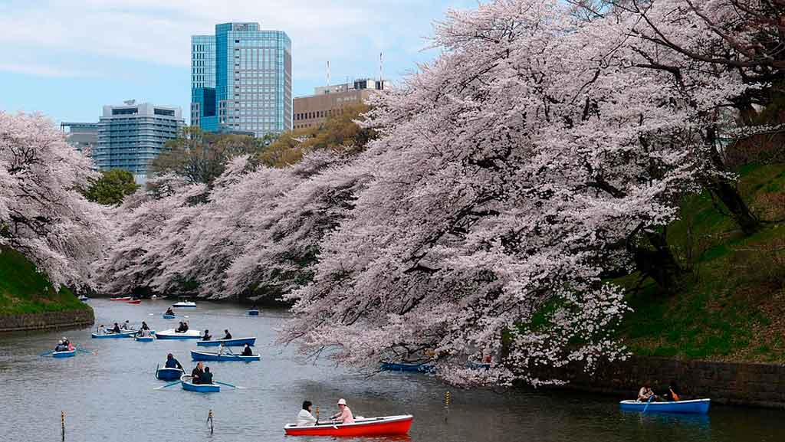
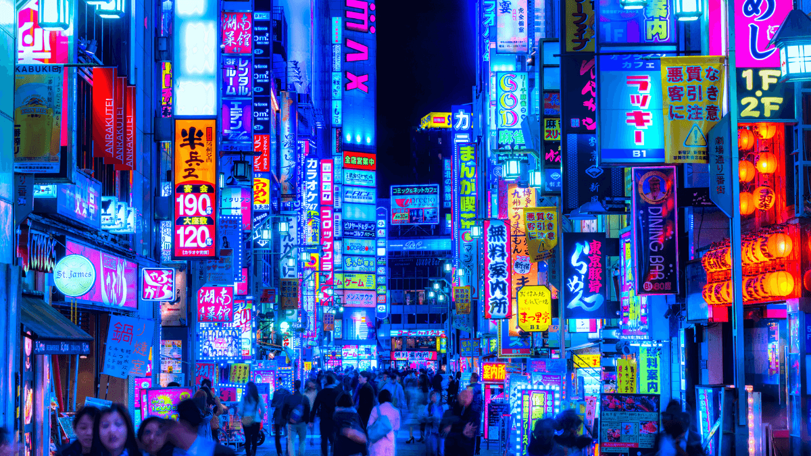

Evoluída, acelerada e repleta de neon, Tóquio é tão futurista quanto histórica!
Geografia de Tóquio
Tóquio localiza-se numa região de relevo bastante acidentado e conta com a presença de montanhas e vulcões. A prefeitura está localizada na maior ilha que compõe o arquipélago que forma o Japão, a Ilha Honsu, juntamente com as outras principais prefeituras. Ao leste de Tóquio, encontra-se a prefeitura de Chiba; ao norte, a prefeitura de Saitama; ao oeste, a prefeitura de Yamanashi; e ao sul, a prefeitura de Kanagawa. Por estar localizada numa região de fronteiras entre placas tectônicas, ocorrem em Tóquio muitos terremotos e outros desastres naturais. Tóquio é considerada a província com maior custo de vida do planeta.
Um pouco sobre a História local...
Tóquio era conhecida como Edo e foi fundada paralelamente à construção do Castelo de Edo, em 1457. Em 1868 ocorreu a Restauração Meiji ou a derrubada de Shogunato Tokugawa, finalizando então o período Edo e iniciando o período Meiji, liderado pelo imperador Meiji. Nesse mesmo ano, houve a alteração do nome Edo para Tóquio. Em 1871 as prefeituras do Japão foram criadas, entre elas, a prefeitura de Tóquio. Tóquio foi marcada por diversos eventos, alguns deles naturais, como os incêndios e terremotos, assolaram a região, vitimando milhares de pessoas, e outros sociais, como os abatimentos provocados pelas guerras. Um dos períodos cruciais da história da província foi o período Pós-Segunda Guerra Mundial, em que a metrópole uniu esforços para ser reconstruída. Tóquio é, atualmente, uma das regiões mais dinâmicas do planeta, repleta de tecnologia atrelada à cultura e de resquícios históricos.
Hoje, Tóquio é considerada o centro político e financeiro do Japão e corresponde ao maior Produto Interno Bruto do mundo, possuindo uma das bolsas de valores mais representativas do planeta. O PIB é de, aproximadamente, US$ 1,4 trilhão. Essa característica está atrelada à forte presença de empresas, companhias eletrônicas, inúmeras indústrias e bancos. Tóquio é considerada a capital do Japão, mas nem sempre foi assim. Até o ano de 1868, a prefeitura de Quioto era considerada a capital do país. A transferência da capital ocorreu mediante a mudança do imperador para o Castelo de Edo, construído na região onde se encontra Tóquio. O Castelo de Edo foi nomeado Palácio Imperial. Quioto ainda é conhecida como a “velha capital”.
Turismo
Pontos Turísticos Que Eu Mais Quero Ir:

Torre de Tóquio
A Torre de Tóquio é uma instalação ativa de transmissão e um local ideal para os viajantes terem contato com a deslumbrante paisagem urbana abaixo. O charme modernista da estrutura pode ser apreciado do lado de fora devido à iluminação à noite, mas a verdadeira emoção vem ao subir ao topo para apreciar as vistas dinâmicas da cidade.Na base da torre, há um complexo de compras chamado Foot Town, que possui várias lojas e restaurantes internacionais.
Museu Ghibli
Localizado em Mitaka, Tóquio, o Museu Ghibli é um espaço de arte totalmente dedicado às obras do Studio Ghibli.Elaborado pelo próprio Hayao Miyazaki, o projeto foi influenciado pela arquitetura européia, como a vila de Calcata, na Itália. Seu planejamento começou em 1998. Já a construção começou em Março de 2000, e foi aberto oficialmente 01 de Outubro de 2001. Em si é uma obra caprichosamente desenhada que remete aos diferentes filmes, e muitos de seus famosos personagens estão lá.
Jardim Nacional de Shinjuku Gyoen
O Jardim Nacional de Shinjuku Gyoen é um parque próximo da enorme estação de Shinjuku. Considerado um dos maiores parques da cidade é uma opção agradável e refrescante para escapar da paisagem urbana de concreto de Tóquio. Propriedade de um senhor feudal no passado, posteriormente se tornou o jardim imperial da família imperial, nobres e convidados. Não é permitido tomar bebidas alcoólicas no Shinjuku Gyoe, nem fumar fora das áreas designadas, tocar instrumentos musicais ou usar equipamentos esportivos. O jardim abre todos os dias, exceto segundas-feiras. Se segunda-feira for feriado, o jardim ficará fechado até o dia seguinte. Ele também fica fechado de 29 de dezembro a 3 de janeiro.